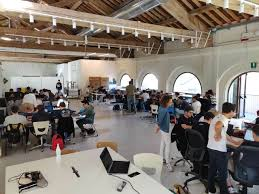

Cos'è
Polarity è un'azienda italiana con sede a Reggio Emilia che offre servizi di sviluppo software avanzato per startup e aziende tecnologiche. Il suo obiettivo principale è accelerare il successo dei clienti fornendo team di ingegneri software di alto livello, guidati da ingegneri principali con conoscenze specifiche nel settore di riferimento.
Polarity si distungue per le seguenti aree di competenza:
- Infrastrutture AWS
- Sviluppo web e mobile
- Intelligenza Artificiale e Machine Learning
- Sistemi distribuiti
Lezione 1
Per iniziare, l’azienda Polarity ha presentato brevemente le proprie attività, spiegando che si occupa dello sviluppo di software e della personalizzazione di applicativi web.
In seguito, mi è stato illustrato il funzionamento di un'applicazione mobile e desktop, evidenziando le principali differenze in fase di progettazione e nei linguaggi di programmazione utilizzati (Java o JavaScript per le app desktop, JavaScript per le app mobile), anche in base al sistema operativo di riferimento.
Per concludere, mi è stato spiegato come avviene il processo di caricamento di una pagina web da parte di un dispositivo. In particolare, abbiamo approfondito il ruolo del server e le possibili risposte che può restituire alle richieste:
- Codici che iniziano per 2 indicano che la richiesta è andata a buon fine
- Codici che iniziano per 3 segnalano un reindirizzamento
- Codici che iniziano per 4 indicano un errore lato client
- Codici che iniziano per 5 segnalano un errore lato server
Lezione 2
In questo secondo incontro ho imparato a effettuare una chiamata di rete utilizzando il protocollo HTTP tramite JavaScript, comprendendone sia il funzionamento che la sintassi. Successivamente, mi sono state spiegate le differenze tra alcune estensioni di file:
- CSV, utilizzato per memorizzare dati in formato tabellare
- WMC, per salvare dati in formato HTML
- JSON, per strutturare e salvare dati in formato leggibile da JavaScript
Infine, ho scoperto cosa sono le API e come funzionano. Ho anche avuto modo di esercitarmi richiamando un’API gratuita tramite JavaScript.
Lezioni 3 e 4
Durante il terzo incontro ci è stato chiesto di lavorare in gruppo a un piccolo progetto: realizzare un bot Telegram collegato a un’API. Il mio gruppo aveva inizialmente un’idea piuttosto ambiziosa, che abbiamo dovuto ridimensionare per rispettare i tempi di consegna e perché una delle API che volevamo usare era a pagamento.

Nell’ultimo incontro abbiamo presentato il nostro bot. Il suo funzionamento era il seguente: tramite un comando era possibile creare automaticamente una playlist sul proprio account Spotify; successivamente, si potevano aggiungere brani scrivendo in chat il titolo o anche solo una frase contenuta nella canzone. Una volta terminata la sessione, il bot salvava la playlist con tutti i brani richiesti direttamente sull’account dell’utente.
Commento
Ho trovato questo progetto piuttosto interessante e stimolante. Mi ha incuriosito a tal punto che, una volta terminato, ho deciso di realizzare un bot tutto mio per uso personale: lo utilizzo per verificare su quale piattaforma di streaming sia disponibile un film.
L’unico aspetto che mi sento di criticare è l’intensità del corso. Gli incontri erano piuttosto lunghi e, soprattutto verso la fine, diventava difficile mantenere la concentrazione e il ritmo.
A mio parere, sarebbe stato utile avere una base più solida di JavaScript già acquisita a scuola, poiché il livello dell’attività era piuttosto avanzato e ha richiesto molto tempo di studio individuale a casa per riuscire a completare il progetto in autonomia.
Competenze attivate
Trasversali
- Competenza personale, sociale, e capacità di imparare ad imparare
- Competenza alfabetica funzionale
- Competenza imprenditoriale
- Competenza matematica e competenza in scienze, tecnologia e ingegneria
- Competenza digitale
- Determinazione dei requisiti per i processi collegati ai prodotti/servizi offerti e alla loro evoluzione nel tempo, in funzione dell'architettura di impresa
- Analisi decisioni strategiche sull'evoluzione tecnologica delle soluzioni ICT